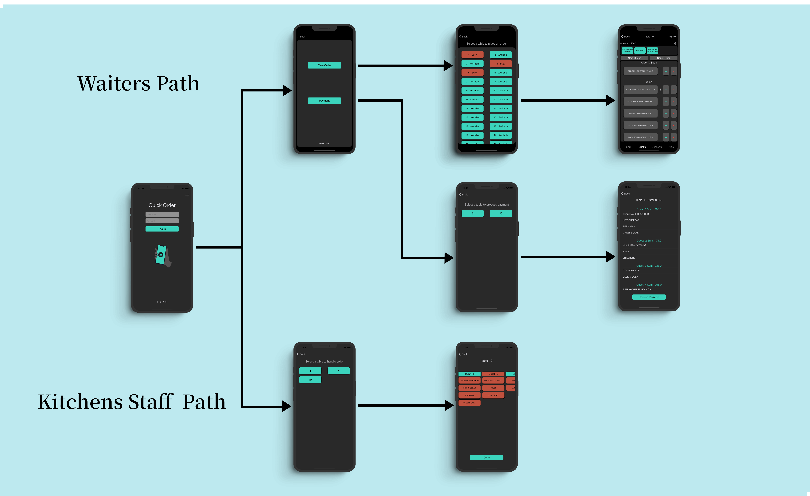

Quick Order ios App

The "Quick Order" app is designed to make it easy for restaurant staff to take orders from guests using a digital system instead of paper and pen. It also helps staff communicate with each other. Waiters take orders from guests and send them to the kitchen for preparation. They can also "confirm" payments by using the app's payment page and selecting "paid." while kitchen staff uses the app to handle and confirm that orders are done. To use the app, staff must have their unique username and password. Waiters and kitchen staff have different levels of access to the app. Waiters can only access pages for taking orders and confirming payments, while kitchen staff can only access pages for handling orders in the kitchen. To log in and test the app, press the "help" button for login instructions. Once logged in as a waiter, they will be taken to the main page, where they have the options of "take order" or "payments." If they choose "take the order," they will be taken to a page with a list of 50 tables. The tables have two different statuses: "available" and "busy." If they choose an available table, they will be taken to the menu page, where the waiter takes the order by asking the guests what they would like to eat. The menu page displays the current guest number, the cost of their order, the table number, and the total cost of the entire order. The waiter can move on to the next guest by pressing the "next guest" button. Waiters can also add notes to the kitchen about each guest's special requests, such as extra tomato on a burger, by pressing the square and pencil button in the top-right corner. After the waiter takes orders from all guests, the waiter sends them to the kitchen. The kitchen staff can handle the order by pressing on a certain meal, which will change the meal label from red to green, indicating that it is done. If there is a note for a certain guest, the label with the guest's number will be red. Kitchen staff must press on it to see what the note is, then press "done" to indicate that they have looked at the note and done it. The label will then turn green. Once the kitchen staff has finished the entire order, when everything is displayed in green, they will press "done" to confirm that the order is complete and the waiter can see that the order is done to bring it. This app is simple and easy to use and will help the restaurant staff to work efficiently.